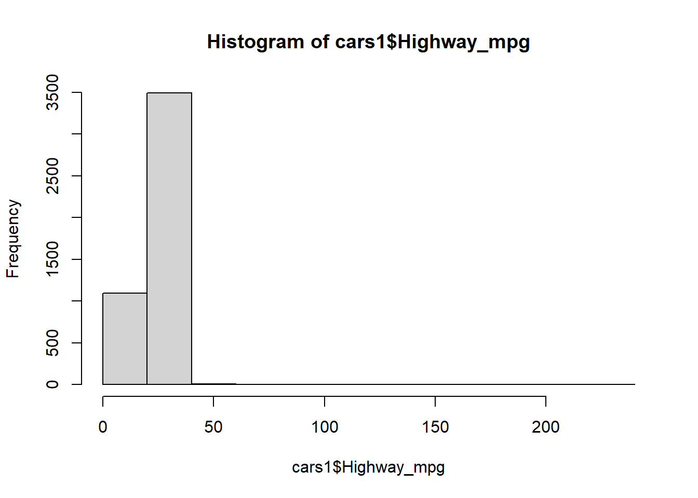

cars<-read.csv("C:/Preparation for UMich/Computational Methods and Tools-506/Assignment-for-STATS506/cars.csv")
rename<-c("Height","Length","Width","Driveline","Engine_type","Hybrid",
"Forward_gears_number","Transmission","City_mpg","Fuel_type",
"Highway_mpg","Classification","ID","Make","Model_year",
"Year","Horsepower","Torque")
names(cars)<-rename
cars<-as.data.frame(cars)Assignment2#Pro_2
You can find my project repository on [GitHub]: https://github.com/Zhangxiaohan515/STATS506-HW
a. The names of the variables in this data are way too long. Rename the columns of the data to more reasonable lengths.
b. Restrict the data to cars whose Fuel Type is “Gasoline”.
cars1<-cars[cars$Fuel_type=="Gasoline",]c. Examine the distribution of highway gas mileage. Consider whether a transformation could be used.
cars1<- cars1[!is.na(cars1$Highway_mpg),]
hist(cars1$Highway_mpg)
We can find the data shows significant right skewness, so we use a log transformation to flatten the right-skewed data, making it closer to a normal distribution.
cars1$Highway_mpg_log<-log(cars1$Highway_mpg)
hist(cars1$Highway_mpg_log)
d. Fit a linear regression model predicting MPG on the highway.
model<-lm(Highway_mpg_log ~ Torque+Horsepower+Height+Length+Width+factor(Year),
data=cars1)
model
Call:
lm(formula = Highway_mpg_log ~ Torque + Horsepower + Height +
Length + Width + factor(Year), data = cars1)
Coefficients:
(Intercept) Torque Horsepower Height
3.507e+00 -2.294e-03 9.238e-04 4.050e-04
Length Width factor(Year)2010 factor(Year)2011
3.475e-05 -8.722e-05 -2.181e-02 -2.430e-03
factor(Year)2012
4.012e-02 summary(model)
Call:
lm(formula = Highway_mpg_log ~ Torque + Horsepower + Height +
Length + Width + factor(Year), data = cars1)
Residuals:
Min 1Q Median 3Q Max
-0.54759 -0.09385 -0.00414 0.09894 2.41852
Coefficients:
Estimate Std. Error t value Pr(>|t|)
(Intercept) 3.507e+00 2.216e-02 158.236 < 2e-16 ***
Torque -2.294e-03 6.757e-05 -33.956 < 2e-16 ***
Horsepower 9.238e-04 6.984e-05 13.227 < 2e-16 ***
Height 4.050e-04 3.456e-05 11.719 < 2e-16 ***
Length 3.475e-05 2.710e-05 1.282 0.19980
Width -8.722e-05 2.774e-05 -3.144 0.00168 **
factor(Year)2010 -2.181e-02 2.076e-02 -1.051 0.29342
factor(Year)2011 -2.430e-03 2.072e-02 -0.117 0.90665
factor(Year)2012 4.012e-02 2.089e-02 1.921 0.05485 .
---
Signif. codes: 0 '***' 0.001 '**' 0.01 '*' 0.05 '.' 0.1 ' ' 1
Residual standard error: 0.1412 on 4582 degrees of freedom
Multiple R-squared: 0.5638, Adjusted R-squared: 0.563
F-statistic: 740.3 on 8 and 4582 DF, p-value: < 2.2e-16My answer: The coefficient for Torque is -2.294e-03, which means that Torque and Highway_mpg_log have negative relationship. When Torque increases, it leads to a decrease in Highway_mpg_log. To be more specific, every 1-unit increase in Torque, Highway_mpg_log decreases by 0.23%; when Highway_mpg_log is converted to original scale Highway_mpg, Highway_mpg decreases by almost 0.998.
e. It seems reasonable that there may be an interaction between torque and horsepower.
# Refit the lm
model_2<-lm(Highway_mpg_log~Torque*Horsepower+Height+Length+Width+factor(Year),data = cars1)
model_2
Call:
lm(formula = Highway_mpg_log ~ Torque * Horsepower + Height +
Length + Width + factor(Year), data = cars1)
Coefficients:
(Intercept) Torque Horsepower Height
3.854e+00 -3.533e-03 -2.339e-04 2.876e-04
Length Width factor(Year)2010 factor(Year)2011
3.643e-05 -1.165e-04 -2.563e-02 -5.886e-03
factor(Year)2012 Torque:Horsepower
3.640e-02 3.939e-06 summary(cars1$Torque) Min. 1st Qu. Median Mean 3rd Qu. Max.
98.0 177.0 257.0 267.2 332.0 774.0 summary(cars1$Horsepower) Min. 1st Qu. Median Mean 3rd Qu. Max.
100.0 185.0 263.0 267.5 317.0 638.0 summary(cars1$Year) Min. 1st Qu. Median Mean 3rd Qu. Max.
2009 2010 2011 2011 2011 2012 library(emmeans)Welcome to emmeans.
Caution: You lose important information if you filter this package's results.
See '? untidy'# We choose Horsepower in 1st quarter, median and 3rd quarter to show.
emmip(model_2, Horsepower ~ Torque, at = list(Torque = c(98, 257, 774), Horsepower = c(185, 263, 317)))
# We choose Horsepower in minimum, median and maximum, Year in 2011 to show.
emmip(model_2, Horsepower ~ Torque, at = list(Torque = c(98, 257, 774), Horsepower = c(100, 263, 638), Year = 2011))
We can see that as horsepower increases, the slope of the relationship between torque and MPG decreases. As torque increases, the rate at which MPG decreases becomes less steep. In other words, with higher horsepower, the decline in MPG slows down as torque rises.
f. Calculate beta from d. manually (without using lm) by first creating a proper design matrix, then using matrix algebra to estimate beta.
We use the ordinary least squares to conclude beta=(X^T X)^{-1} X^T y
X<- model.matrix(~ Torque + Horsepower+Height
+Length+Width+factor(Year), data=cars1)
y<- cars1$Highway_mpg_log
X_T <- t(X)
beta<-solve(X_T %*% X)%*% (X_T %*%y)
beta [,1]
(Intercept) 3.506922e+00
Torque -2.294331e-03
Horsepower 9.238126e-04
Height 4.049897e-04
Length 3.475207e-05
Width -8.722295e-05
factor(Year)2010 -2.181247e-02
factor(Year)2011 -2.430359e-03
factor(Year)2012 4.011528e-02print(coef(model)) (Intercept) Torque Horsepower Height
3.506922e+00 -2.294331e-03 9.238126e-04 4.049897e-04
Length Width factor(Year)2010 factor(Year)2011
3.475207e-05 -8.722295e-05 -2.181247e-02 -2.430359e-03
factor(Year)2012
4.011528e-02 We can see clearly that Torque in beta is equal to the prior coefficient in Torque.